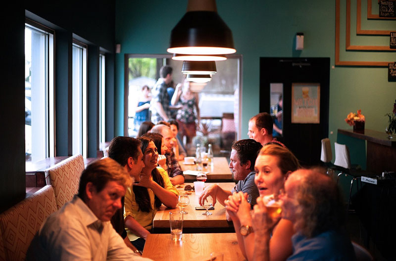

Столиця Каталонії, дуже популярне серед туристів усього світу, готова познайомити своїх гостей не тільки з традиційною кухнею Іспанії, але і національними стравами різних країн. Однак, разрекламированность міста і його надпопулярність тягнуть за собою завищення цін, в тому числі і в закладах громадського харчування. Тому економного туристу доведеться в Барселоні не легко, адже харчуватися в МакДональдсі протягом усієї відпустки - задоволення, як то кажуть, «так собі». Але тепер Ви можете бути спокійні: у Барні все-таки є місця, де можна дешево, смачно і навіть корисно поїсти! Ось ці чудові закладу:
1. Кафе «365»: Тут вранці можна випити свіжу каву та скуштувати смачну випічку, кожен з 365 днів на рік! Низькі ціни приємно здивують: кава з круасаном за 1,8 євро, напій з великим бутербродом (бокадільо) за 2,5 євро, обіднє меню всього за 5 євро. Мережа має безліч точок по всьому місту, практично у кожної станції метро.
2. Nostrum: Хороша пропозиція, щоб швидко і смачно поїсти. Свіжі салати коштують від 2 євро, основні страви від 2,5 євро, а фокаччею можна замовити всього 1,3 євро. Філії цієї мережі розташовані практично в кожному районі Барселони.
3. La Tasqueta del Blai: заклад пропонує, мабуть, кращі монтадітос в місті. Це невеликі багаторівневі бутербродики, які можуть включати в себе до 10 інгредієнтів. Кращі тапас-хмарочоси тут подають всього за 1 євро. Вулиця Carrer de Blai, де розташовується кафе, пропонує відвідати гостям більше 30 закладів з смачними і недорогими тапас на будь-який смак.
4. 100 Montaditos: знаменита іспанська закусочна, мережа якої включає близько 350 точок по всьому світу, де кожен день подається більше 18 мільйонів літрів пива і 150 тисяч проданих тапас. Смачні і прості закуски по середах і неділях пропонують всього за 1 євро. Дешевше не придумаєш! Особливою фішкою закладу є те, що по неділях воно відкрито цілодобово.
5. El Tianguis: мексиканська кухня високої якості за доступними цінами: тако від 1,8 євро, кесаділья з сиром за 3,8 євро, начос з гуакамоле за 6 євро, напої від 2,3 євро.
6. Wok Arc de Triomf: це ідеальне місце, щоб наїстися досхочу, а також для тих, хто давно не їв, а й грошей в гаманці теж немає. Тут і суші, і закуски, і основні блюда, свіже м'ясо і морепродукти, які готують прямо при Вас, а також широкий вибір десертів і морозива. Днем шведський стіл доступний за 10,5 євро і 14 євро ввечері. Правда, за напої треба платити окремо.
7. Chen Ji: саме в китайському кварталі Барселони подають справжню китайську їжу. Величезні тарілки з супом (майже на літр) за 3-4 євро, майже кілограмові порції локшини і гігантські страви рису з м'ясом за 4-5 євро.
8. La Malandrina: тут справжній рай для м'ясоїдів, тому що тільки в цьому стейк-барі подають найбільші порції м'яса при найнижчій ціні в Барселоні. Порція ціною 8-10 євро включає в себе стейк з аргентинського м'яса, картоплю і салат.
9. Mosquito: в цьому закладі громадського харчування можна замовити найсмачніші азіатські тапас в Барселоні. Закусочна має один з найвищих рейтингів (9.3) в додатку Foursquare. Ціни тут дуже гуманні: свинячі реберця обійдуться в 2,75 євро, смачні сечі - в 2,95 євро, а велика порція супу з Дамплінг в 5,85 євро.
10. Kaitenuchi Dao: це безлімітний буфет за типом шведського столу, але тільки в більш красивому оформленні та подачі. Зголоднілі відвідувачі сідають біля конвеєра з проїжджаючими повз смачними стравами азіатської кухні і морепродуктами. З'їсти тут можна рівно стільки, скільки влізе. Денна вартість буфету - 10,50 євро, а ввечері й у вихідні можна поїсти за 14,50 євро.